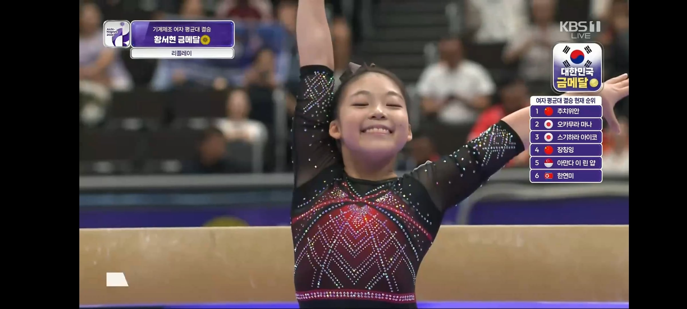

어린 딸 뛰어드는거 멱살잡고 끌어내리는거 같음ㅋㅋ

키133 고2임 다른 선수도 작은편인데 더 작음
어린 딸 뛰어드는거 멱살잡고 끌어내리는거 같음ㅋㅋ

키133 고2임 다른 선수도 작은편인데 더 작음
헐 고2면 다 큰거네... 초중딩인줄 알았다
9살 평균키임..
진짜 귀여움 ㅋㅋㅋ
해설 들어보니 저기 올라가면 감점이라서 못올라가게 잡았다네
아니 그럼 메달 바뀔수도 있던겨?
133이면..와
본인 피셜 좀 커서 135래... 음 그래
133이면 초1 키 수준이란거네 ㄷㄷ
가족 다같이 보는데 얘 완전 커여워가지고 ㅋㅋㅋㅋ
133이면 장애로 들어가는거 아니냐
국가법령정보센터 장애인의 장애 정도(제2조 관련) 검색해보면 알 수 있음
140CM 미만이 장애기준이래 ㄷㄷ
헐 이런법이있었네
국제적으로도 147cm 이하면 왜소증으로 장애범주에 들어간다고 하더라
초딩같이 보여도 , 135라 우기는거 같에도, 장애같이 보여도
모든걸 이겨냈다
zzzzzzzzzzzzzzzzzzzzz
나중에 커서 남친은 사회적 시선을 감당하며 교제해야되네....
쉽지 않다.
그래도 니새끼보단 잘살듯
정말이지 수요없는 오지랖이구나
씨부리기 전에 생각이란걸 좀 하자
내 대학 동기가 쟤랑 키 비슷했었는데
여자 고2면 다큰거 아니냐 개작네
고2? ㄷㄷ

아니 고2 키가 133이라고??
와 133은... 진짜 인간승리네 대단하다
그래 키 작아도 유리한게 있어야지
나이스
고2요?
진짜 초딩같아보이긴 하더라
한국의 시몬바일스 !